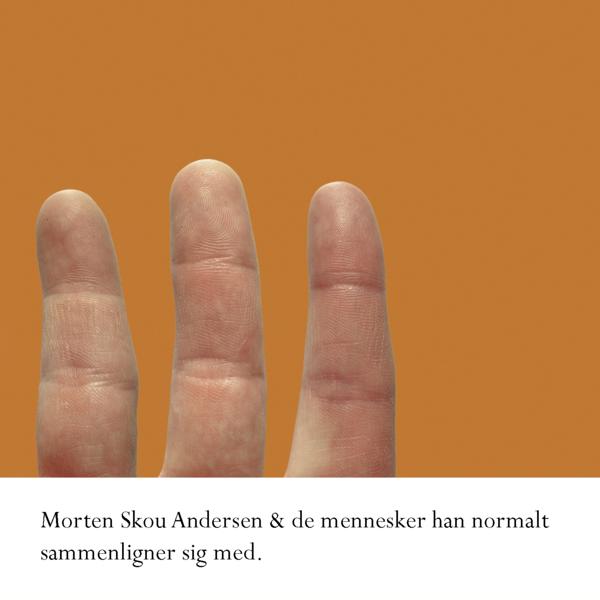

Morten Skou Andersen & de mennesker han normalt sammenligner sig med
26. oktober 2009
Kombineret dobbelt vinyl og cd (MSA2&D / MSA2OD)
Anmeldelser
“I tider hvor glitrende, men kaloriefattige shows som X-faktor, Talent 09 og Idol dominerer mediefladen i Danmark, er det overordentligt befriende med en mand som Morten Skou Andersen. … Han har det aller, allervigtigste: nerve, indignation, fortællelyst og masser af humor” (Michael Strandbech, Arbejderen).
„Pladen er det mest interessante inden for meningsfulde dansksprogede tekster, jeg længe har hørt” (Mads Simon Hestbech, Undertoner).
Side A
1 Normaliseringen af Hellerup
2 Kærlighedsgaver
3 Skatter det er en dekonstruktion
4 Engang var du studerende og jeg var på kontanten
5 Guds ord
Side B
1 Emilie verden er gigantisk
2 De grå II
3 Johns portrætter
Side C
1 Meningsfuld vold
2 I de lande vi normalt sammenligner os med
3 Påvirket
4 Flemming og effektiviseringen
5 Soprten rør de satmer ikke
6 Om at flytte på landet
Side D
1 Dræbersneglen kommer
(På cd’en er Flemming og effektiviseringen udeladt pga. pladsmangel, og I de lande… og Påvirket er byttet om.)
Musikere og andre medvirkende
Morten Skou Andersen: akustisk guitar og sang.
Adam Juhl Norholt: bas.
Jacob Karl Viktor Lundgren Lövenlund: harmonika.
Optaget, mikset og mastereret af Simon Gylden
Art work af Jonas Jensen alias Kasper Knigge.